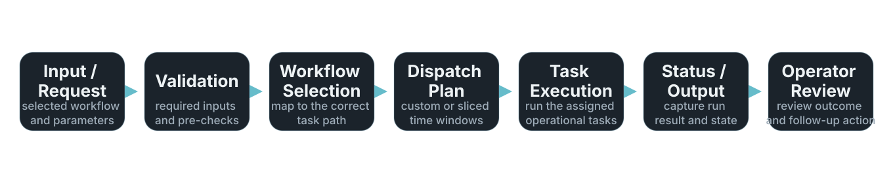

Featured Project
Splunk Utility Tool 4.0
Python-based operational tooling for Splunk workflow orchestration, segmented job dispatch, and managed report execution, designed to improve reliability and reduce manual effort.
Problem
Recurring Splunk workflows become harder to manage when execution is ad hoc.
Operational Splunk workflows often involve repetitive manual steps, coordination across multiple tasks, and inconsistent execution when processes are handled in an ad hoc way. This increases manual effort, raises execution risk, and makes recurring support work harder to manage consistently.
Context
The aim was to make repeatable support work more structured and supportable.
This project was built to explore a more structured and supportable approach to Splunk-related operational workflows. The aim was to improve how repeatable tasks are triggered, controlled, and maintained, while keeping the design practical for real-world support and operational use.
What I Built
A utility framework focused on control, repeatability, and maintainability.
I designed a Python-based utility framework to support workflow orchestration, segmented job dispatch, and managed execution of recurring operational tasks. The design focuses on improving control, repeatability, and maintainability for day-to-day Splunk support activities.
Technical Approach
Workflow logic and task execution are separated to improve extensibility.
The solution is structured around modular task handling, controlled execution flow, and clearer separation between workflow logic and task execution. This makes it easier to extend for new use cases, troubleshoot when needed, and adapt for different operational scenarios without redesigning the entire workflow.
Workflow Overview
A high-level flow makes the operating model easier to understand.
This high-level workflow shows how the utility moves from operator input through controlled execution and output handling. It is intentionally simplified to illustrate the operational structure without exposing internal implementation detail.

Why It Matters
The point is operational consistency, not automation for its own sake.
The value of the tool is not just automation for its own sake. It is about reducing repetitive manual handling, improving operational consistency, and making recurring workflows easier to run, support, and maintain over time.
Key Design Goals
Operational structure should reduce effort and improve long-term supportability.
- Reduce manual effort in recurring workflows
- Improve reliability through structured execution
- Support clearer control over task dispatch and flow
- Make the solution easier to maintain and extend
- Improve long-term operational supportability
Technologies
Implementation stays focused on practical operations tooling.
Python, Splunk, workflow automation, operational tooling
Status
The work remains part of active independent portfolio development.
Independent project and active portfolio work
Technical Documentation
A deeper engineering write-up is available in the project repository.
The portfolio overview summarizes the project at a high level. A deeper engineering write-up is available in the project repository, covering dispatch workflow, validation coverage, safety controls, and implementation boundaries.
Next Improvements
Further work is focused on visibility, modularity, and operator usability.
- Add clearer run-state visibility and execution logging
- Expand modular task support for additional workflows
- Introduce more structured reporting for completed jobs
- Improve operator usability and support documentation